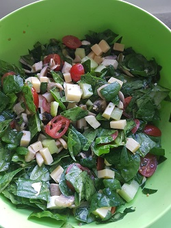

Spinatsalat
Zubereitungszeit: 30min
Ergibt: 6 Portionen

- 200g Spinat
- 200g Champignons
- 250g Tomaten
- 150g Salatgurke
- 175g junger Gauda
- 125g Mozzerella
- 2 EL Maisöl
- 1 EL Rotweinessig
- 1 EL getrocknete Kräuter
- Gemüse waschen und klein schneiden, Champignons anbraten
- Käse in Würfel schneiden, alles in einer großen Schüssel miteinander vermengen
- Essig, Öl und Kräuter vermengen und zum Salat geben
- Vor dem Essen etwas ziehen lassen.